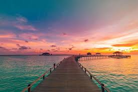

A história das Maldivas é marcada pela longa influência de culturas vizinhas, pelo período colonial e pela independência. A região foi inicialmente povoada por migrantes da Índia e do Sri Lanka, e a influência cultural desses povos é visível até hoje. A religião, que era budista e hindu, foi substituída pelo Islão no século XII, e a partir daí, a cultura islâmica moldou significativamente o país.
A localização estratégica das Maldivas permitiu um comércio próspero com a Índia, Sri Lanka e outros países vizinhos, influenciando sua cultura e desenvolvimento.
Conquista Islâmica: O Islão foi introduzido no país no século XII e se tornou a religião oficial em 1153, com a conversão do sultão em 1153
.As Maldivas foram colonizadas por portugueses, holandeses e britânicos ao longo dos séculos, sendo que os britânicos transformaram o país em um protetorado.
Após a colonização britânica, o país obteve a independência em 1965.
O turismo se tornou uma das principais fontes de receita do país, e a pesca também é importante para a economia.
As Maldivas enfrentam desafios como a elevação do nível do mar e a necessidade de diversificação econômica.
